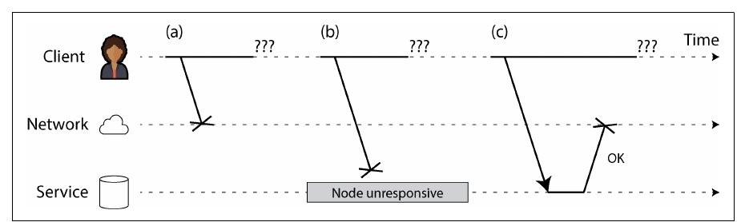
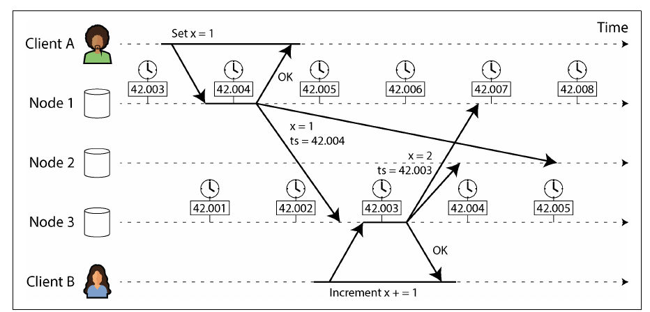
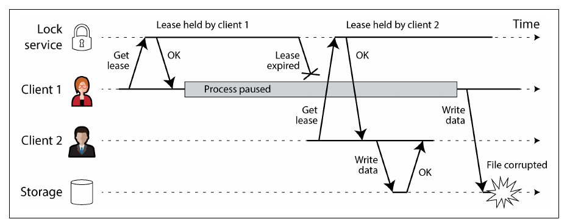
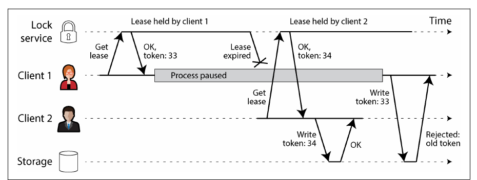

Chapter 9 · pp. 345–400
The Trouble with Distributed Systems
Designing Data-Intensive Applications, 2nd Edition
This chapter is a deliberately pessimistic catalogue of what goes wrong once software runs on more than one machine. Networks lose and delay packets without telling you which; clocks drift, jump, and disagree; processes pause for arbitrary lengths of time and come back unaware. The defining characteristic of a distributed system is partial failure, and because no node can know the truth for certain, decisions must be made by quorum, protected against stale actors with fencing tokens, and reasoned about using explicit system models. It closes with how to gain confidence anyway: formal methods and randomized testing (fuzzing, deterministic simulation).
The chapter’s own outline (from the book’s table of contents)
- Faults and Partial Failures — p. 346
- Unreliable Networks — p. 347
- The Limitations of TCP — p. 348
- Network Faults in Practice — p. 350
- Fault Detection — p. 351
- Timeouts and Unbounded Delays — p. 352
- Synchronous Versus Asynchronous Networks — p. 355
- Unreliable Clocks — p. 358
- Monotonic Versus Time-of-Day Clocks — p. 359
- Clock Synchronization and Accuracy — p. 360
- Relying on Synchronized Clocks — p. 362
- Process Pauses — p. 366
- Knowledge, Truth, and Lies — p. 371
- The Majority Rules — p. 372
- Distributed Locks and Leases — p. 373
- Byzantine Faults — p. 377
- System Model and Reality — p. 380
- Formal Methods and Randomized Testing — p. 384
- Summary — p. 388
From the book
Introduction
Reliability means focusing on what could go wrong, however unlikely — in a large enough system, one-in-a-million events happen every day. This chapter turns pessimism “up to the maximum” about networks, clocks and timing (p. 345).
From the book
Faults and partial failures
A single computer is deliberately designed to be either fully working or entirely broken: an internal fault crashes it (kernel panic) rather than returning wrong answers, presenting an idealized, deterministic model — even though in reality data is occasionally corrupted and CPUs occasionally miscompute (p. 346). Networked machines can’t hide reality: Coda Hale’s list of experiences includes long-lived partitions, PDU and switch failures, accidental power cycles of whole racks, datacenter-wide power failures, and a hypoglycemic driver smashing into a DC’s HVAC system (p. 346).
- Partial failure: some parts broken in unpredictable ways while others work fine — and nondeterministic: the same operation sometimes succeeds, sometimes fails, and you may not even know which (pp. 346–347).
- Tolerating partial failures is also an opportunity — rolling upgrades, and a reliable system from unreliable parts. “Suspicion, pessimism, and paranoia pay off” (p. 347).
From the book
Unreliable networks
Shared-nothing machines communicate only over an asynchronous packet network, which guarantees neither when nor whether a packet arrives. If a request gets no response (Figure 9-1), it’s impossible to tell which of these happened (pp. 347–348):
| What happened | Example cause |
|---|---|
| Request lost | Unplugged cable |
| Request queued, delivered later | Overloaded network or recipient |
| Remote node failed | Crash, power-down |
| Remote node temporarily unresponsive | Long GC pause |
| Request processed, response lost | Misconfigured switch |
| Request processed, response delayed | Overloaded network or your own machine |
The usual answer is a timeout — which still doesn’t tell you whether the request got through, and it may yet be delivered (p. 348).


Unreliable networks
The limitations of TCP
pp. 348–349TCP (and QUIC, SCTP, uTP) splits streams into packets, retransmits losses, reorders, checksums and does congestion/flow control. But it can’t tell whether the outbound packet or the ack was lost, can’t plug a cable back in, and eventually gives up with an error. Deduplication works only within one connection — reconnecting and resending can duplicate. A closed connection tells you nothing about how much the remote application processed; even a delivered packet only reached the remote kernel. Only a positive response from the application confirms success (p. 349).
Unreliable networks
Network faults in practice
pp. 350–351| Evidence | Detail |
|---|---|
| Medium-sized datacenter study | ~12 network faults per month: half isolated one machine, half an entire rack |
| Component study | Redundant gear helps less than expected — it doesn’t prevent human misconfiguration |
| Wide-area links | Cut by cows, beavers and sharks (rarer with better shielding), misconfiguration, scavenging, sabotage |
| Delays | Cross-region round trips of several minutes at high percentiles; over a minute inside a datacenter during a switch-upgrade topology change |
| Asymmetric faults | A↔B and B↔C work but A↔C doesn’t; a NIC that drops all inbound but sends outbound |
| Aftermath | Brief interruptions can have long-lasting repercussions |
A network partition (netsplit) is just one kind of interruption — unrelated to sharding. Untested handling can deadlock a cluster permanently or even delete all data. Tolerating faults isn’t mandatory — showing an error may be fine — but you must know how the software reacts and that it recovers; trigger faults deliberately (p. 351).
Unreliable networks
Fault detection
pp. 351–352Load balancers must stop routing to dead nodes; leader-based databases must fail over. Explicit signals sometimes exist — a TCP RST/FIN when nothing listens on the port, a script announcing a crashed process (HBase), switch management interfaces, ICMP Destination Unreachable — but generally you must assume no response at all: retry, wait for a timeout, declare the node dead (pp. 351–352).
Unreliable networks
Timeouts and unbounded delays
pp. 352–355Long timeouts → long waits and error messages; short ones → live nodes declared dead, actions performed twice (e.g. an email sent by both the old and new node), extra load and possibly cascading failure where everyone declares everyone dead (p. 352). If every packet arrived within d or not at all, and a working node always answered within r, then 2d + r would be a perfect timeout — but asynchronous networks have unbounded delays and servers can’t promise r (p. 353).
Network congestion and queueing — where the variability comes from (pp. 353–354):
| Queue | Why packets wait |
|---|---|
| Switch | Several ports send to the same destination; a full queue drops packets (Figure 9-2) |
| Destination OS | All CPU cores busy; the packet waits for the application |
| Hypervisor | The VM is paused while another runs |
| TCP sender | Congestion control limits the send rate |
| TCP retransmission | The app sees loss only as delay |
UDP avoids flow control and retransmission, so suits VoIP and video where late data is worthless (“Could you repeat that please?”) (p. 354). Delay variability grows near capacity and with noisy neighbors in shared clouds, so choose timeouts experimentally from measured round-trip distributions — or adapt them continuously like the Phi Accrual failure detector (Akka, Cassandra) or TCP retransmission timeouts (pp. 354–355).
Try it
How long before a node is dead?
Open full screen ↗ · the simulation is the vault’s own model of the mechanism the book describes.
Unreliable networks
Synchronous versus asynchronous networks
pp. 355–358| Telephone circuit (ISDN) | Datacenter / internet | |
|---|---|---|
| Switching | Circuit: bandwidth reserved along the whole route — 16 bits per frame at 4,000 frames/s, i.e. 16 bits every 250 µs | Packet (Ethernet, IP): packets opportunistically share links |
| Delay | Bounded: no queueing | Unbounded: queueing |
| Suited to | Constant-rate audio/video | Bursty traffic — pages, emails, files, where you can’t guess a bandwidth |
| Resource sharing | Static partitioning: a wire with 10,000 call slots reserves your slot even if 9,999 are idle | Dynamic: maximizes utilization, so each byte is cheaper |
The same trade-off applies to CPUs (run queues) and VMs on shared hosts. Variable delays are a cost/benefit choice, not a law of nature (pp. 356–357). Hybrids exist — ATM, InfiniBand’s link-level flow control, QoS prioritization and admission control, L4S, Linux traffic control; BGP peering resembles circuits at the network level — but none are enabled in multitenant clouds or across the internet, so there is no “correct” timeout (pp. 357–358).
From the book
Unreliable clocks
Applications ask about durations — has this request timed out? p99? queries per second? time on site? — and points in time — when was this published? when to send the reminder? when does this cache entry expire? when was this log line written? Messages take an unknown time to travel, and every machine has its own quartz clock, synchronized at best via NTP from servers fed by GPS (p. 358).
Unreliable clocks
Monotonic versus time-of-day clocks
pp. 359–360| Time-of-day (wall-clock) | Monotonic | |
|---|---|---|
| API | clock_gettime(CLOCK_REALTIME), System.currentTimeMillis — since the epoch (1 Jan 1970 UTC), ignoring leap seconds | CLOCK_MONOTONIC / CLOCK_BOOTTIME, System.nanoTime |
| Can jump backward? | Yes — forcible NTP resets, leap seconds; DST unless using UTC; coarse resolution on old systems | No — guaranteed forward (multi-socket timers aside); NTP may slew its rate by up to 0.05% |
| Comparable across machines? | Ideally yes | No — absolute value is meaningless |
| Use for | Points in time | Durations, timeouts — fine in distributed systems |
Unreliable clocks
Clock synchronization and accuracy
pp. 360–362| Problem | Detail |
|---|---|
| Quartz drift | Varies with temperature; Google assumes up to 200 ppm → 6 ms drift between 30-second syncs, 17 s if synced daily |
| Forced resets | Too far from NTP → refuse to sync or jump; apps see time go backward or leap forward |
| Firewalled from NTP | Goes unnoticed while drift accumulates |
| Network-limited | ~35 ms minimum error over the internet; spikes of ~1 s; NTP may give up |
| Wrong NTP servers | Off by hours; clients query several and drop outliers — still trusting strangers |
| Leap seconds | 59- or 61-second minutes have crashed large systems; smearing spreads the adjustment over a day; leap seconds end in 2035 |
| VMs | Paused for tens of ms while other VMs run → clock jumps forward |
| Devices you don’t control | Users set wrong dates, e.g. to cheat in games |
With enough investment it can be good: MiFID II requires high-frequency trading clocks within 100 µs of UTC, using GPS and/or atomic clocks, PTP and careful monitoring — though GPS can be jammed, e.g. near military facilities. Some clouds offer high-accuracy sync to VMs (pp. 361–362).
Unreliable clocks
Relying on synchronized clocks
pp. 362–366A day may not have 86,400 seconds, clocks jump back, nodes disagree. Unlike a broken CPU or NIC, a bad clock seems to work — causing silent, subtle data loss. If you rely on synchronized clocks, monitor offsets and evict nodes that drift too far (p. 362).
- Timestamps for ordering events (pp. 362–364): Figure 9-3 — client A writes
x = 1on node 1 (stamped 42.004 s), node 3 gets it, client B increments tox = 2on node 3 (stamped 42.003 s, under 3 ms of skew), and node 2 keepsx = 1under last write wins. Consequences: writes from a node with a lagging clock mysteriously vanish; LWW can’t tell sequential from concurrent writes; equal millisecond timestamps need random tiebreakers. A packet sent at 100 ms can arrive at 99 ms. Fixing it would need clock error far below network delay — impossible. Use logical clocks (Ch. 10).


- Clock readings have a confidence interval (pp. 364–365): microsecond digits mean nothing if you only know the time ±100 ms; “95% confident it is between 10.3 and 10.5 s past the minute”. Uncertainty = drift since last sync + server uncertainty + round trip.
clock_gettimehides it; TrueTime (Spanner) and Amazon ClockBound return[earliest, latest]. - Synchronized clocks for global snapshots (pp. 365–366): distributed MVCC needs causally ordered transaction IDs, and a global counter is a bottleneck. If two intervals don’t overlap, their order is certain — so Spanner waits out its confidence interval before committing, keeping uncertainty small (~7 ms) with GPS receivers or atomic clocks in each datacenter; YugabyteDB can use ClockBound on AWS.
Try it
Clock skew and last write wins
Open full screen ↗ · the simulation is the vault’s own model of the mechanism the book describes.
Unreliable clocks
Process pauses
pp. 366–371A leader holding a lease (a lock with a timeout) renews it if fewer than 10 s remain, then processes a request. Two bugs: the expiry was set by another machine’s clock, and — even with a monotonic clock — a 15-second pause between the check and process(request) means acting after the lease expired and someone else took over (pp. 366–367).
| Cause of a pause (pp. 367–369) | |
|---|---|
| Lock/queue contention | Worse with more cores |
| Garbage collection | Stop-the-world pauses once lasted minutes |
| VM suspend/resume, live migration | Arbitrary length |
| Laptops and phones | Lid closed, app suspended |
| Context switches; hypervisor steal time | Long run queues under load |
| Synchronous disk I/O | Even implicit — Java’s lazy class loading; worse on network disks like EBS |
| Swapping/paging | Thrashing; often disabled on servers |
SIGSTOP | Ctrl-Z, or sent by accident; resumes on SIGCONT |
Single-machine thread-safety tools (mutexes, semaphores, atomics) don’t translate: there’s no shared memory. Hard real-time systems (airbags) need an RTOS, documented worst-case times and restricted allocation — expensive, and lower throughput; uneconomical for servers (pp. 369–370). Limiting GC impact (pp. 370–371): modern collectors (CMS, G1, ZGC, Epsilon, Shenandoah; Go’s concurrent collector) pause milliseconds; Swift (reference counting), Rust and Mojo avoid GC; object pools and off-heap memory; treat GC like a planned outage (drain requests first) or restart processes before long-lived garbage accumulates.
From the book
Knowledge, truth, and lies
A node knows nothing for sure: it guesses from messages received or not. We state a system model — assumptions about behaviour — and design algorithms proven correct within it (pp. 371–372).
Knowledge, truth, and lies
The majority rules
pp. 372–373Three nightmares: a node that receives but whose outgoing messages are dropped is “dragged to the graveyard, kicking and screaming I’m not dead!”; a semi-disconnected node notices but can’t stop it; a node paused for a minute “raises its head out of the coffin” unaware time passed. A node can’t trust its own judgment, so decisions — including declaring nodes dead — take a quorum, usually an absolute majority: it tolerates a minority of faults (1 of 3, 2 of 5), and two conflicting majorities can’t exist (pp. 372–373).
Knowledge, truth, and lies
Distributed locks and leases
pp. 373–377Leases enforce “only one”: one leader per shard (no split brain), one writer per object, one worker per input file. If two nodes believe they hold it, the last is merely wasteful; the first two corrupt data. Figure 9-4 (a real HBase bug): client 1’s lease expires during a pause, client 2 writes, client 1 resumes and writes too. Figure 9-5: no pause — client 1’s write is delayed in the network past its lease (pp. 373–374).
A former holder that hasn’t noticed is a zombie; preventing damage is fencing. Shutting zombies down (STONITH — power off, cut network) doesn’t stop delayed requests, risks nodes shutting each other down, and may be too late (pp. 374–375). Robust fencing uses fencing tokens — numbers that increase with every grant (Figure 9-6):




| System | Its fencing token (pp. 375–376) |
|---|---|
| Chubby | Sequencers |
| Kafka | Epoch numbers |
| Paxos / Raft | Ballot number / term number |
| ZooKeeper | zxid or node cversion |
| etcd | Revision number + lease ID |
| Hazelcast | FencedLock API |
A new holder should write immediately to fence zombies off. Like optimistic concurrency control, but permanent. The resource must check tokens — or offer a conditional write (S3 conditional writes, Azure conditional headers, GCS request preconditions), in which case the lock service is somewhat redundant (pp. 375–376). Across replicas: in a leaderless LWW store, put the token in the most significant digits of the timestamp, so every write by holder 34 beats any by zombie 33, and read repair/anti-entropy clean up a zombie write that slipped onto one replica (Figure 9-7) (pp. 376–377).
Try it
Leases, process pauses, and fencing tokens
Open full screen ↗ · the simulation is the vault’s own model of the mechanism the book describes.
Knowledge, truth, and lies
Byzantine faults
pp. 377–380The book assumes nodes are unreliable but honest. Nodes that “lie” — contradictory votes, fake fencing tokens — are Byzantine faults; reaching consensus despite them is the Byzantine Generals Problem, a generalization of the two generals problem (the name chosen so as not to offend; “Albanian Generals” was advised against) (pp. 377–378).
| Byzantine fault tolerance matters | It usually doesn’t |
|---|---|
| Aerospace: radiation corrupts memory; flight control must tolerate arbitrary behaviour | Datacenter nodes controlled by one organization, low radiation (orbital datacenters are being considered) |
| Mutually untrusting parties: blockchains, peer-to-peer networks | Multitenancy — isolated by firewalls, VMs, access control |
| Web clients — handled by making the server the authority (validation, sanitization, escaping vs SQL injection and XSS) |
BFT protocols are expensive; most need a > ⅔ supermajority of correct nodes, so against bugs you’d need four independent implementations; an attacker who compromises one node can usually compromise all — traditional security remains the defence (p. 379). Weak forms of lying are cheap to guard against: application-level checksums or TLS for packets that slip past TCP/UDP checksums; input sanitization and size limits; NTP clients polling several servers and excluding outliers (pp. 379–380).
Knowledge, truth, and lies
System model and reality
pp. 380–384| Timing model | Assumes | Realistic? |
|---|---|---|
| Synchronous | Bounded delay, pauses and clock error | No |
| Partially synchronous | Usually bounded, occasionally arbitrarily large | Yes |
| Asynchronous | No timing assumptions — not even a clock | Very restrictive |
| Node-failure model | Assumes |
|---|---|
| Crash-stop | A node fails only by crashing, forever |
| Crash-recovery | Crashes and maybe returns later; stable storage survives, memory doesn’t |
| Degraded performance | Limping nodes / gray failure / fail-slow: a NIC dropping to 1 Kb/s, GC thrashing, erratic SSDs, heat, loose connectors — or a deadlocked background thread |
| Byzantine | Anything, including deception |
The most useful combination: partially synchronous + crash-recovery (p. 381). Correctness is stated as properties — e.g. fencing tokens need uniqueness, monotonic sequence and availability (p. 382):
| Safety — “nothing bad happens” | Liveness — “something good eventually happens” | |
|---|---|---|
| Violation | At a specific moment; can’t be undone | May not hold now, but can still become true |
| Examples | Uniqueness, monotonic tokens | Availability; eventual consistency |
| Requirement | Always — even if every node crashes | May carry caveats (majority up, network eventually heals) |
Real systems break model assumptions — disks wiped by hardware errors or misconfiguration, firmware that doesn’t see its drives, nodes with amnesia that break quorums — so code may need a last-resort printf("Sucks to be you"); exit(666). Models are still invaluable for reasoning (pp. 383–384).
Knowledge, truth, and lies
Formal methods and randomized testing
pp. 384–388| Technique | What it checks | Notes |
|---|---|---|
| Model checking (TLA+, Gallina, FizzBee) | A specification across all reachable states, within bounds | Used by CockroachDB, TiDB, Kafka; TLA+ found potential data loss in viewstamped replication’s prose description; specs can drift from code |
| Fault injection | The real system under crashes, partitions, pauses, disk faults | Chaos engineering (Netflix’s Chaos Monkey); frameworks like Jepsen have found critical bugs in many systems |
| Deterministic simulation testing (DST) | Your actual code, with network, I/O and clocks mocked so any failing run replays exactly | Application-level (FoundationDB’s Flow, TigerBeetle’s single event loop), runtime-level (FrostDB patching Go, Rust’s MadSim), machine-level (Antithesis hypervisor); runs faster than real time |
AWS, FoundationDB and TigerBeetle combine property-based testing, fuzzing and DST (p. 384). The power of determinism recurs throughout the book: event-sourcing replay, durable-execution workflows, and state machine replication (statement-based replication, serial stored procedures) — though hash-table iteration order and resource limits can still be nondeterministic (pp. 387–388).
Recap
Trade-offs at a glance
| Problem | You can't… | Practical response |
|---|---|---|
| Lost or delayed messages | Distinguish a dead node from a slow one | Timeouts (ideally adaptive), idempotent retries |
| Clock skew and jumps | Order events across nodes by timestamp | Logical clocks; confidence intervals; commit-wait |
| Process pauses | Assume a check is still valid when you act on it | Fencing tokens; leases checked by the resource |
| No global knowledge | Trust a single node's view | Quorum decisions |
| Unbounded behaviour | Prove correctness in a synchronous model | Partially synchronous, crash-recovery models + testing |
Recap
Key takeaways
- Partial failure is nondeterministic: some parts work, some don't, and you may not even know whether an operation succeeded (pp. 346–347).
- Networks are asynchronous: a missing response could mean a lost request, a dead node, a slow node, or a lost reply — indistinguishable. Timeouts are the only detector, and they can't be perfect (pp. 347–358).
- Unbounded delay is a choice: telephone-style circuits give bounded latency but waste capacity; packet switching optimizes utilization at the cost of queueing (pp. 355–358).
- Time-of-day clocks are for timestamps, monotonic clocks for durations. NTP sync is imprecise, so clock readings have a confidence interval; LWW conflict resolution by timestamp can silently drop writes (pp. 358–366).
- Processes pause (GC, VM suspension, paging, I/O, SIGSTOP) — a node holding a lease may resume after it expired and act on stale beliefs (pp. 366–371).
- Truth is defined by the majority; a node can't trust its own judgment. Fencing tokens make storage reject writes from a deposed lock holder (pp. 371–377).
- Assume crash-recovery faults with partially synchronous timing as the realistic system model; Byzantine tolerance is mostly for adversarial settings (pp. 377–384).
- Model checking, TLA+, fuzzing, and deterministic simulation testing find bugs that ordinary tests can't (pp. 384–388).
Practice
Check yourself
Questions and answers are the vault's, written from the notes above; answers cite the book's pages.
2Why should timeouts never be measured with a time-of-day clock?Show answer
Time-of-day clocks can jump forward or backward (for example after NTP synchronization), so an elapsed time computed from them can be wrong or negative. Monotonic clocks are designed for measuring durations (pp. 359–360).
3How can last-write-wins with synchronized clocks silently lose a write that happened later in real time?Show answer
If the node that made the later write has a clock that lags behind, its timestamp is lower and LWW discards it in favour of the earlier write — with no error reported (pp. 362–364).
4A lease-holder checks its lease and then writes. What can go wrong in between, and how do fencing tokens stop it?Show answer
The process can pause (e.g. for garbage collection) after checking; meanwhile the lease expires and another client acquires it. Fencing tokens increase with each grant and the storage service rejects writes carrying a token lower than one it has already seen (pp. 366–377).
Supplement
Beyond the book
Vault supplement — not from the book.
- Peter Bailis and Kyle Kingsbury's "The Network is Reliable" (ACM Queue, 2014) collects the incident evidence summarized here.
- Martin Kleppmann's 2016 essay "How to do distributed locking" argues the fencing-token point against Redlock in detail.
Next steps
Keep going
Connections
- Run it: Physical vs logical clocks — skewed clocks violating causality.
- Related chapters: 6. Replication (failover, LWW), 8. Transactions, 10. Consistency and Consensus (the solutions to these problems).